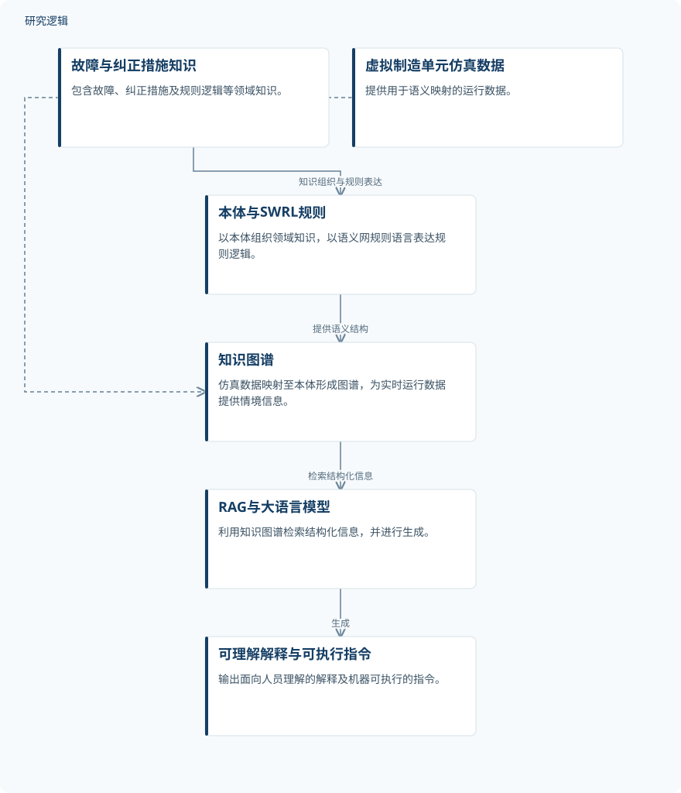

摘要解读
大语言模型增强的语义数字孪生：实时故障诊断与闭环控制
Large Language Model-Augmented Semantic Digital Twins for Real-Time Fault Diagnosis and Closed-Loop Control
解读更新 2026-11-10 11:46 · 依据公开摘要整理，未核验全文细节
制造系统的数字孪生如何从“映射运行状态”走向“解释故障并支持控制”？这项研究将本体、知识图谱与大语言模型结合，为理解可解释诊断与机器可执行指令之间的联系提供了一个框架。
文章目录
从过程复现走向情境理解
摘要指出，传统数字孪生擅长复现物理过程，但在理解情境、推理系统行为方面仍有局限。这会限制其对可信、透明和自适应决策的支持。研究关注的认知数字孪生（CDT），不仅要反映系统正在发生什么，还要利用领域知识解释运行状态，为故障诊断与决策提供依据。
用本体与知识图谱连接大模型
研究提出神经符号认知数字孪生框架，通过检索增强生成（RAG）连接本体建模与大语言模型。本体组织故障、纠正措施等领域知识，并使用语义网规则语言（SWRL）表达规则逻辑，形成支持认知推理的结构化知识层。
数据来自虚拟制造单元的仿真，其运行数据经语义映射进入本体，构建为实时运行数据提供情境信息的知识图谱（KG）。随后，RAG流程利用该图谱检索结构化信息，由大语言模型生成人可理解的解释和机器可执行的指令，将规则推理与神经生成连接起来。
依据摘要整理的神经符号认知孪生流程


仅概括摘要明确陈述的知识组织、数据映射和检索生成关系，不是论文原图，不表示未报告的控制反馈配置。
下载 SVG图示关系说明
实线表示相邻阶段的信息流，虚线表示跨阶段联系或反馈。
故障与纠正措施知识 → 本体与SWRL规则：知识组织与规则表达；本体与SWRL规则 → 知识图谱：提供语义结构；虚拟制造单元仿真数据 → 知识图谱：语义映射；知识图谱 → RAG与大语言模型：检索结构化信息；RAG与大语言模型 → 可理解解释与可执行指令：生成
用例报告诊断、解释与控制的改善
摘要报告，所展示的用例表明，规则推理与神经生成的结合增强了故障检测、可解释性和自适应控制。其结果不只面向自然语言解释，也包含机器可执行指令，体现了同时服务人员理解与系统操作的设计目标。不过，摘要给出的是定性结论，未提供改善幅度或具体评价指标。
仿真用例之外的证据边界仍待核对
仅凭本次摘要，无法判断仿真数据规模、用例数量、故障覆盖范围，以及比较基线和评价方法。摘要也未交代实时响应的测量方式、指令执行的反馈验证及实体制造系统中的验证范围。因此，不能将其定性结论扩展为已证明的工业部署效果；这些信息未在摘要报告，不等于论文没有开展相关工作。
阅读启发：追踪知识如何转为控制依据
阅读启发：进一步阅读时，可重点追踪本体规则、知识图谱检索结果与生成指令之间的对应关系：解释能否追溯至领域知识，指令又如何与运行状态关联？同时应区分“生成可执行指令”与“完成闭环控制验证”，核对用例究竟支持到哪一步，而不将框架预期直接视为已验证能力。
以上为本站阅读启发与建议，不是论文已验证的结论。